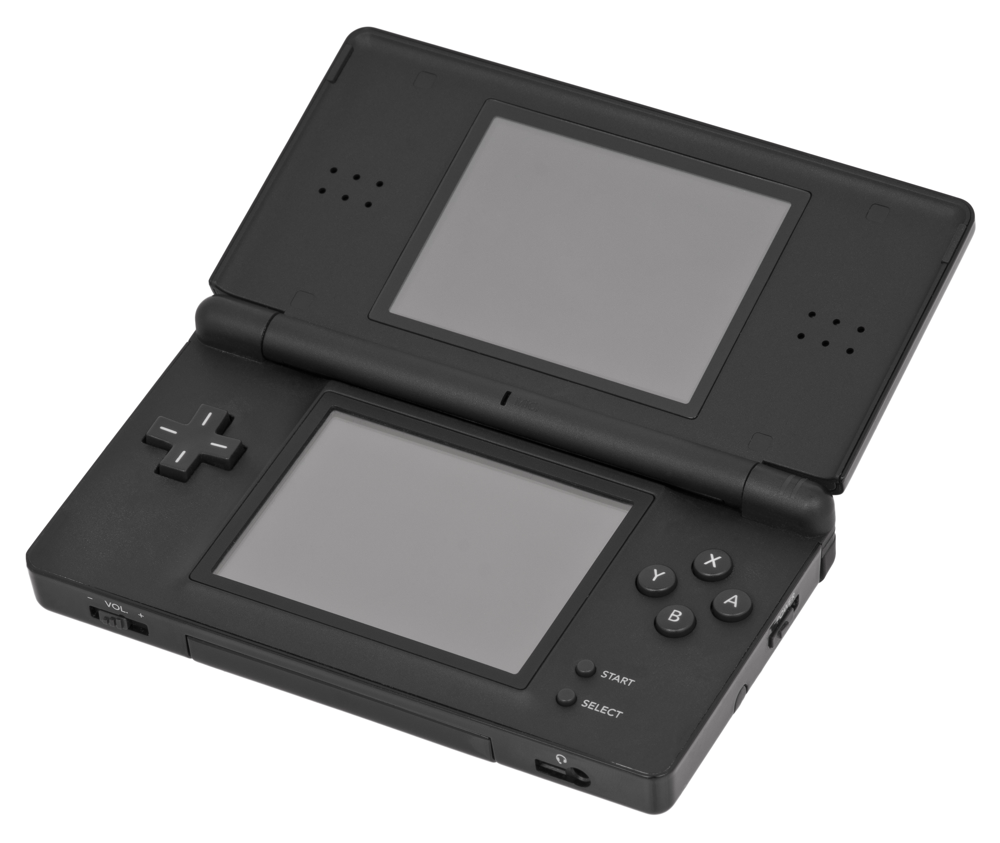

Lanzado al mercado a inicios de los 90'. Seas o no fanático de Nintendo, el GameBoy probablemente, tiene un diseño altamente conocido que trasciende las edades y marcas. Es una consola recordada con mucho cariño por parte de la comunidad gamer.

La Nintendo DS, sucesora de la GameBoyAdvance, salió a principios del año 2005 y permitió no solo acceder a varios catalogos de videojuegos sino también a archivos multimedia en un momento el cuál la industria de consolas de videojuegos estaba en un periodo de gran competencia.

Lanzada a principios del 2017, la familia de "Switch" es la última consola de la marca (actualmente en el año 2023) y fue una última apuesta por parte de Nintendo luego de unas grandes pérdidas económicas a causa de la consola "Wii U". Nintendo considera a Switch una consola híbrida. Se puede utilizar como consola de sobremesa con la unidad principal insertada en una estación de acoplamiento para conectarla con un televisor.